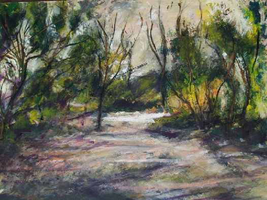
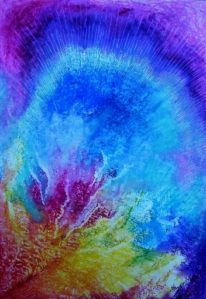

Una
visión diferente...
Una
visión diferente...
| Autor: Carlos Quaglia ( Argentino radicado en Brasil) |
¡Nuevo!
As estrelas estão... Mas, não estão iluminando. Porque não estão iluminando?... Porque estão atrás das obscuras nuvens.
As nuvens estão... E estão assombrando.
Se as estrelas não te iluminam, Que as nuvens te assombrem...
Esta noite estarei contigo. Na luz ou na sombra.
|
Algunos anteriores
Estoy dentro de un bellísimo paisaje… Trato de concentrarme y observarlo sin distraerme… Esos pensamientos e imágenes me envuelven en un clima emotivo y me dejan encerrado en mí mismo. Por más que me resista e intente volver al paisaje externo, mi paisaje interno se sobrepone y mi mente se queda encadenada a sus contenidos. Insisto y, con el sol ya alto, percibo al paisaje y a mí mismo como hechos de la misma sustancia, formando una unidad. Agradezco, me levanto y continúo alegremente mi camino…
|

|
CUENTO DE DRAGONES…
Había una vez, hace no demasiado tiempo, ni demasiado espacio; había un lugar en el cual andaban por las veredas y calles: gatos, perros, tigres, zorros, leones, tortugas, hormigas; y hasta dragones… Eran los dragones los que más me atraían, pues echaban fuego por la boca, o volaban. Al mismo tiempo, me atemorizaban; pues nuestros padres nos decían que jugar con fuego era peligroso: O uno se quemaba, o uno se hacía pis en la cama… Pero esta historia se está volviendo triste y no tiene gracia quedarse en la tristeza. Había también dragones que no echaban fuego por la boca, pero sí volaban… Nuestros padres también nos decían que era peligroso jugar con ellos, pues uno se podía caer… Sin embargo, algunos padres lo hicieron… Y antes de fundirse con los dragones, se los veía muy contentos y felices. |
MÁGICOS INSTANTES
Pasaste muy cerca: Como la suave brisa de un aletear de pájaros… Como la leve fragancia de frutas silvestres… Como el abrir y cerrar de ojos de una mirada transparente.
En esos mágicos instantes compusimos una sinfonía con todos sus movimientos... Y la grabamos en nuestra memoria común. |
AMAR...TE.
Amarte es no extrañarte. Es siempre recordarte; con placer y agradecimiento...
Amarte es no descartarte. Es siempre esperarte; con alegría y merecimiento...
Amarte es no buscarte. Es siempre encontrarte; con amable reconocimiento...
Amarte es jugar contigo; como juego con las palabras; sin trampas ni sufrimiento… |
COMO PABLO NERUDA...
Poderia escrever os versos mais tristes esta noite... Escrever, por exemplo: Que o céu está nublado. Poderia, estilo Pablo, escrever: Corpo de mulher, morros ondulados, Poderia... Em fim..., compor um poema de amor. Para, hoje à noite, ajudar-me a aceitar tua ausência sem dor...
|
UN ARTISTA…
Un artista es quien consigue que otros perciban su subjetividad en la forma que él la expresa…
Esto puede ser a través de la pintura, de la escultura, de la música, de la danza, del teatro, o de la literatura.
Básicamente es un don innato, que no se enseña ni se aprende en academias o instituciones.
El problema no está en las dificultades que pueda tener su desarrollo material, lo que sí se enseña y se aprende en los lugares citados y un artista puede frecuentarlos si le sirven.
El problema puede estar en la respuesta al ¿para qué?… Y también al ¿qué?
¿Qué se quiere expresar?... ¿Y para qué?
 VIAGEM DE IDA E VOLTA...
VIAGEM DE IDA E VOLTA...
Uma noite obscura, sem lua, nem faróis próximos.
Nuvens borrascosas... Como de tormenta.
Uma rua vazia e silenciosa... Sem casas à vista, quase campo.
Com mato e árvores frondosas nas laterais.
A sombra existir não deveria... Pois luz não havia.
Mas, quando me roçou... Um frio visceral me envolveu.
Enquanto ia perdendo a visão e tudo ia ficando mais escuro...
Entretanto, meus ouvidos sentiam músicas, nas quais reconhecia o Wagner, Beethoven e Strauss, que me foram envolvendo num girar enlouquecido e sem fim.
Quando a música e os giros acabaram e recobrei a visão, era um dia de sol maravilhoso e me encontrava numa pradaria calidamente verde, maculado por azuis, vermelhos, laranjas e amarelos de flores esparsas na pradaria.
Tal coisa não podia ser possível, a menos que estivesse sonhando ou morto...
Então comecei a percorrer meu corpo com as mãos, reconhecendo como próprio cada um dos seus setores.
Mas, mesmo assim, havia algo que não encaixava em minhas sensações... E não consegui descobrir o quê era.
Decidi caminhar para reconhecer o lugar e encontrar algum indicio de onde me encontrava...
O sol brilhava calidamente, mas não podia determinar se estava se pondo ou nascendo, nem havia nuvens que pudessem dar alguma referencia de sua localização. E não estava vertical sobre mim.
Então, decidi caminhar em sua direção, pois a pesar de sua luminosidade esplêndida, não me cegava.
Comecei a caminhar a bom passo, mas sem pressa, para chegar a algum lugar, enquanto sentia um prazeroso vigor no meu corpo.
Deparei-me com um animal de quatro patas caminhando em minha direção...
Ao nos aproximarmos, percebi que era um lobo de mais ou menos um metro e meio de altura.
Nem ele nem eu sentimos receio por nosso encontro e continuamos nos aproximando.
Antes de bater nos detivemos e nos olhamos nos olhos...
Eu registrei uma instantânea reminiscência no seu olhar.
Continuei a observá-lo com atenção, mas acabei desistindo de lembrar de onde eu o conhecia.
Ao observar suas patas dianteiras, vi que eram como mãos...
E nesse preciso instante, ele me estendeu a sua direita e a apoiou amistosamente na palma da minha, sem deixar de olhar nos meus olhos.
Eu não podia pensar e nada falei, pois ele não teria entendido minha língua.
Não obstante isso, de alguma maneira, com o seu olhar transparente, o estranho lobo indicou-me para segui-lo em sua direção, oposta da minha e do sol...
Não vacilei em aceitar seu convite e recomeçamos a caminhar lado a lado.
Com o seu olhar ele ia me indicando regiões da paisagem, entre as quais consegui distinguir riachos com águas de mil cores em movimento, e suaves e ondulantes colinas, que me falavam de belezas que não cabiam no meu entendimento, mas que de alguma maneira conseguia reconhecer.
Era-me impossível determinar o tempo transcorrido, pois o sol continuava no mesmo lugar e as paisagens se sucediam sem interrupção, como se fossem uma só...
Estava vivendo um instante mágico e desisti de quebrá-lo com a minha razão.
Não posso então dizer quanto tempo foi isso, nem qual era esse espaço onde estava.
Mas, lembro que em um momento, o lobo e eu nos detivemos e ficamos de novo frente a frente.
Então, ele me estendeu novamente sua mão, tomando a minha e me indicando que aí se separavam os nossos caminhos.
Mas, que novamente nos encontraríamos...
A lembrança posterior foi de eu girando na música na mais completa escuridão.
Pouco depois, um frio visceral... E logo, novamente na noite obscura, onde antes me encontrava caminhando rumo à minha casa.
 VIDA HUMANA…
VIDA HUMANA…
Debemos confiar en la vida…
Comprender que en ella hay sabiduría.
Podremos crear vida…
¿Qué tipo de vida vamos a crear?...
¿Mejor o peor que la nuestra, la de ahora?
Debemos confiar en la vida…
Y en la más evolucionada y compleja de sus expresiones:
La vida humana.
En ella hay Sabiduría, hay Fuerza y hay Bondad…
Abriéndose paso.
Tal vez esto no sea la vida humana… Tal vez, la vida humana es inaprensible en sí misma.
Esto es una visión de la vida humana y hay tantas visiones como miradas existen.
--------------------
Escribir por el placer de expresar un registro interno, el que de por sí es intraducible… o inexpresable, por sí mismo. Cada palabra debe estar asociada a alguna partícula específica del registro interno y cada signo de puntuación debe tener una resonancia rítmica con él. Más tarde, después, al leer lo escrito, debe reproducirse el registro. Y ese escrito, leído por otros, sólo será comprensible si evoca el mismo registro interno en quienes lo leen. |
Escrever, hoje em dia, é digitar num teclado e ver o resultado na tela de um computador, como antes era ver num papel numa máquina de escrever e antes era desenhar signos com uma caneta numa folha de papel. Fora disso, escrever é brincar com as palavras, ordenando-as de acordo aos seus significados. Esses significados são absolutamente subjetivos e não têm um padrão comum e objetivo. E quando as palavras vão se combinando, vão surgindo significados mais complexos, também subjetivos. Depois de terminado, um escrito é a síntese de significados anteriores e, simultaneamente, um novo significado. Lido por outra pessoa pode resultar tal vez ininteligível... |
|---|
Supe que mis ojos ya no verían los tuyos...
 M
A M I...
M
A M I...
Hola Mami: hoy estuviste conmigo y estuve con vos, conversando.
Por la primera vez desde hace 20 años, cuando te fuiste de aquí.
Sin verte com mis ojos provisórios, senti tu presencia y creo que sentiste la mia...
Te ayudé a morir, ¿te acordás?..., Como vos me ayudaste a nacer.
Me suenan todavia tus últimas palabras: “Cachi: em la vida no vale la pena hacerse mala sangre”; vos, que tanto te la hiciste por mi...!
Después cerraste los ojos, mientras yo trataba de guiarte por tu camino interno...
Cuando todo terminó, me quede em silencio y no derramé
uma lágrima. Por alguna razón, sentí que no eras ese cuerpo.
Algunos días después, cuando fui a recoger el que había
sido tu cuerpo, ya preparado para viajar a Buenos Aires,
donde sería enterrado; al ver ese rostro, lloré...
También tengo un cuerpo y supe que los ojos de él
ya
no verían más el tuyo.
Fueron lindos los últimos meses que pasamos juntos
y sentí
que pude agradecerte todo lo que siempre me diste y por lo
que nunca te había dicho gracias.
. . .
 (¿O
los últimos serán los primeros?...)
(¿O
los últimos serán los primeros?...)
Mis padres se continúan
en mí… Y así podríamos remontarnos
hasta los primeros seres humanos.
|
 Pintura con pasteles al óleo de Mirta Beatriz Campos (Mendiolaza, Córdoba, Argentina) |
Y ahí estaban ellos, aterrorizados y diezmados
por predadores y fuerzas de la naturaleza…, juntándose en comunidades
como otros
animales y perdiendo todas las batallas…
Hasta que un día (o “era una vez”),
después de una tormenta eléctrica que dejó árboles
incendiados, algún o algunos de estos frágiles
seres, no huyeron del fuego como todos los otros, sino que, a riesgo de la integridad
de sus vidas, fueron hacia él,
lo recogieron y aprendieron a conservarlo y producirlo.
Dejaron entonces de ser animales, pues fueron más allá de los límites impuestos por el natural instinto de conservación.
¿Por que hicieron eso?... Una verdadera “locura”, podría decirse.
Seguramente porque algo dentro de ellos les permitió
antever un futuro, en el cual el fuego los calentaría, mantendría
a raya a sus
predadores y les permitiría cocinar sus alimentos; superando así
el dolor y el sufrimiento.
Fue entonces el surgimiento de los primeros seres
humanos… Dotados de una conciencia intencional apta para diseñar
el futuro,
transformando la naturaleza y a sí mismos.
Y así fueron ellos construyendo la historia humana, en la cual, junto a muchos aciertos, sumaron también muchos errores.
Y todos ellos, con sus aciertos y sus errores, se continúan en nosotros, aprendiendo sin límites.
Reservados todos los derechos de autor.